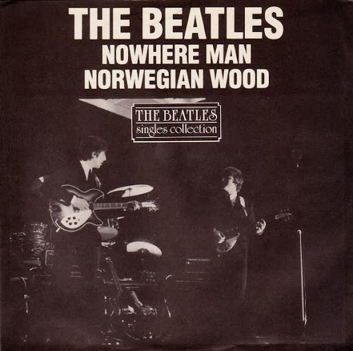
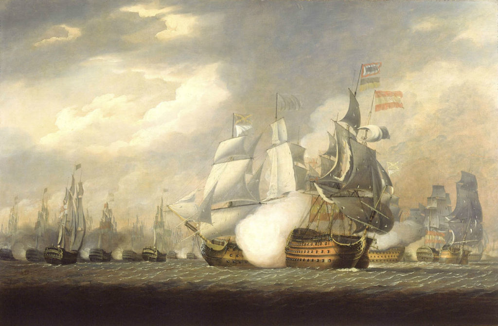
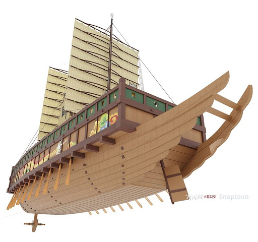
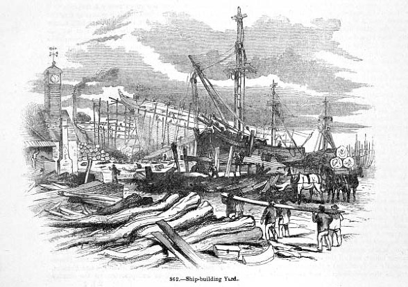
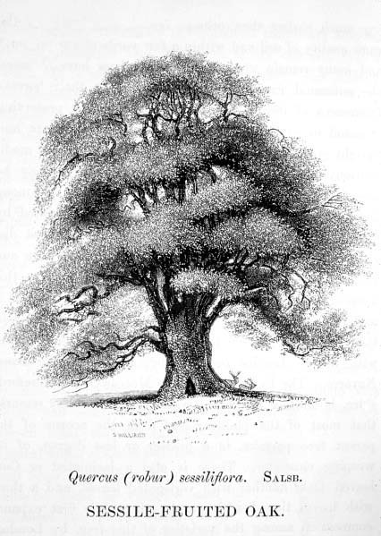
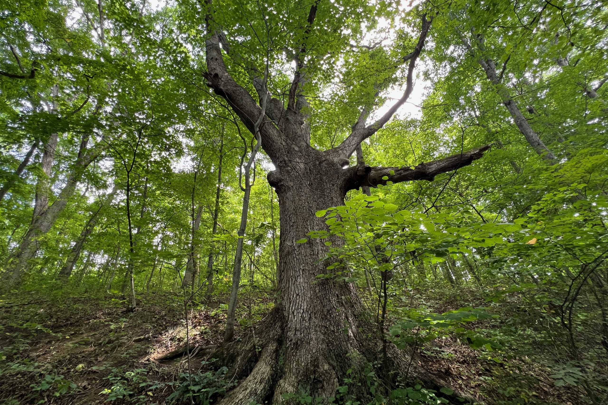
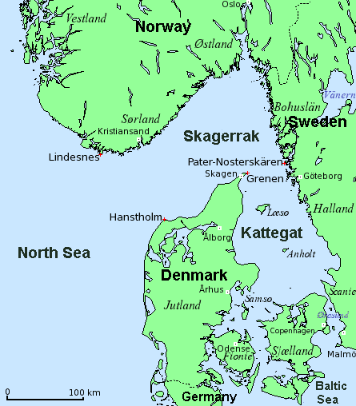
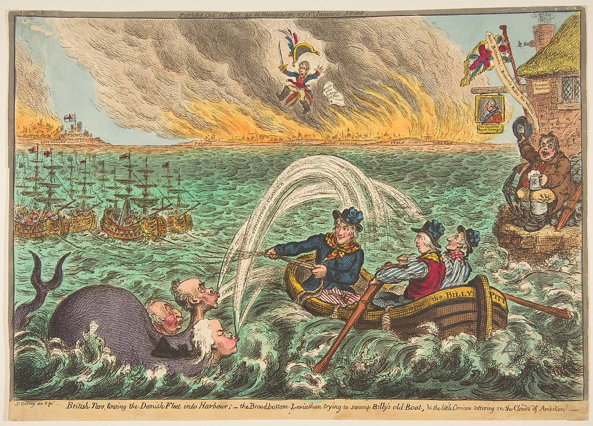
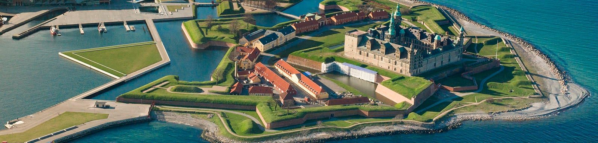

영국의 전략 자원 - 노르웨이의 숲
게시: 2025-01-27T06:45:13+09:00
** 개인 사정으로 오늘은 과거 글을 재탕합니다. 죄송합니다. 제가 처음 읽은 무라카미 하루키 소설은 "상실의 시대" 또는 "노르웨이의 숲"이었습니다. 대체 이 난봉꾼 주인공의 문란한 성생활을 그린 소설 내용과 노르웨이의 숲과는 무슨 상관 관계가 있는지에 대해서는 다들 의아해하셨을 겁니다. 그 소설 제목의 원천이 되었던, 비틀즈의 동명곡의 가사에서도 Norwegian wood, 즉 노르웨이산 나무라는 것이 무엇을 뜻하느냐에서 대해서는 의견이 분분합니다. 무라카미 하루키는 소설 속에서 이를 노르웨이의 숲이라고 해석했는데, 가사 내용을 보면 그건 아닌 것 같습니다. 어떤 사람들은 이를 '노르웨이산 가구'라고 번역해야 하는데, 하루키가 잘 모르고, 혹은 일부러 오역을 했다고도 합니다.

원래의 뜻은 정말 노르웨이산 목재를 뜻하는 모양입니다. 왜냐하면, 매카트니가 작사한 저 가사는, 매카트니가 실제로 경험한 내용을 반영한 것이라고 비틀즈 인터뷰에서 밝혔거든요. 가사 배경을 간단히 정리하면 이렇습니다. 여친네 집에 자러 갔더니, 가구는 없고 아파트 내부가 노르웨이산 싸구려 소나무로 인테리어가 되어 있더라는 겁니다. 그런데 여친이 (아마도 침대도 좁고 소파도 없으니까) 자기를 욕조 속에서 재우더랍니다. 그래서 아침에 일어나 화가 나서 그 노르웨이산 소나무에 불을 확 질러버렸다는 것이 실제 경험이랍니다. 뭐 이런 후덜덜한 데이트 폭력이 다 있죠? 아무튼 원래 노래 제목도 'Cheap Pine (싸구려 소나무)'라고 하려다가, 멋이 없어서 Norwegian Wood로 정했다고 하더군요. 그런데 이 글이 제 블로그의 주제인 나폴레옹의 시대와 무슨 상관이 있는지 궁금해하시겠습니다만, 사실 밀접한 관계가 있습니다. 일단, 왜 영국 가정 내부가 노르웨이산 목재로 마무리가 되었는지 생각해 보아야 합니다. 일본이나 영국같은 섬나라는 만리장성이나 알라모 요새가 지켜주는 것이 아니라, 제해권을 장악하는 함대가 지켜주는 것입니다. 즉, 영국 방위의 제1선은 바로 Royal Navy지요. 이에 대해서는 아무리 강조해도 지나치지 않습니다.

19세기 중반까지 Royal Navy의 물리적 실체를 이루고 있는 것은 다름아닌 나무였습니다. 당시 군함들은 모두 목재로 만들어졌으니까요. 그것도 최소한 수십년 된 크고 튼튼한 영국제 떡갈나무(oak)나, 스코틀랜드 소나무로만 만들어졌습니다. 다 같은 나무 아니냐고 전나무(spruce) 같은 것을 써서는 안되었습니다. 사실 전나무는 재질이 가볍고 질겨서, 선박 건조에 많이 쓰이는 목재입니다만, 전함을 만들 때는 곤란했습니다. 전함의 주임무는 적함에 대포를 쏘고, 또 적함이 쏘는 대포알을 견디어 내는 것이었는데, 전나무로 만든 외벽은 8파운드짜리 소구경 포에도 마분지에 구멍 뚫리듯 뻥뻥 뚫렸거든요. 임진왜란 드라마를 보면, 조선 수군 장수들이 툭하면 '당파하라 !'하면서 판옥선을 왜선에 시밤쾅하고 들이받는 장면이 꼭 나오는데, 이는 판옥선이 무겁지만 단단한 소나무로 만들어진 것에 비해, 왜선은 가벼운 삼나무로 만들어졌기 때문입니다.

영국하면 아름다운 숲이 많은 나라같아 보이지만, 문제는 이렇게 수십년 된 떡갈나무가 무한정으로 있는 것은 아니라는 점에다, 17세기 이래로 영국이 해군 양성에 힘쓰다보니, 그 자원이 점점 고갈되어 간다는 점이었습니다. 나무라는 것은 베어내면 다시 심고 키울 수 있으니까, 무한 재생 자원처럼 보이지만, 사실 꼭 그렇지도 않았습니다. 범선 시대의 선박들의 평균 수명에 대해서는 함장님 ! 군함 바닥에서 물이 샙니다!! ( https://nasica-old.tistory.com/6862306 ) 편을 참조하시면 되겠습니다만, 대략 30~40년은 되었습니다. 하지만 그런 배들을 만드는데 사용되는 떡갈나무의 수명은 80~100년이었거든요. 게다가, 목조 범선은 한번 만들면 끝인 그런 물건이 아니었습니다. Jack Aubrey 시리즈도 그렇고, Hornblower 시리즈에서도, 함장들은 항상 각종 spar니 yard니 하는 목재를 구하려고 전전긍긍합니다. 거친 바다를 항해하다 보면 그런 돛대나 사장은 항상 부러지고 썩고 파손되기 때문에, 끊임없이 보수를 해주어야 했기 때문입니다. 특히 대포질을 해대는 군함들은 한번 전투 이후 여기저기 구멍이 뚫리기 때문에, 더욱 목재 소비량이 많았습니다. 1796년에 개브리얼 스노드그래스(Gabriel Snodgrass)라는 동인도 회사의 조선 기술자가 정부 및 동인도 회사 간부들에게 보낸 편지가 남아있습니다. 이 편지에서 스노드그래스는 영국 해군 군함들의 조악한 품질로 인한 난파 사고를 막기 위한 이런저런 개선 방안을 적고 있습니다. 그 내용을 보면, 별다른 유지 보수 없이도 18년 정도는 사용 가능한 군함이 평균 11년 정도만에 폐선해야 하는 일이 벌어지고 있으며, 이는 군함의 건조 방식과 유지 방식에 문제점이 있기 때문이라는 것이 지적되고 있습니다. 가령 현실적으로 배의 여러 부분들이 3년은 커녕 1년도 seasoning(건조)을 하지 않은 원목으로 만들어지기 때문에, 그렇게 덜 건조된 목재로 만든 부분부터 먼저 썩어들어가고, 그로 인해 해군에게 막대한 비용은 물론 운용 효율도 떨어진다고 지적되어 있습니다. 특히, 당시 1천톤 급의 프리깃함의 선체가 겨우 3인치 짜리 목재로, 또 1천8백톤 급 74문의 대포를 장착한 전함 선체가 4인치 짜리 목재로 되어 있는 것을 개탄하며, 자기가 건조를 감독한 동인도 회사의 선박들은 6백톤만 넘어도 4인치 짜리 목재를 쓴다고 지적하고 있습니다. 그의 주장은 해군에서 4백톤 급 이상의 군함이라면 무조건 최소 두께 4인치 이상의 목재로, 전함급이라면 최소 6인치 이상의 목재로 선체를 만들어야 한다는 것이었습니다. 하지만 영국 해군성도 그런 사실을 과연 몰라서 그렇게 얇은 껍질의 전함을, 제대로 건조도 안된 목재로 만들었을까요?

영국 해군에 꼭 필요한 자원은, 영국 국가 전체의 전략 물자라고 할 수 있었습니다. 영국산 100년 묵은 떡갈나무야 말로, Royal Navy의 몸을 만드는 뼈와 살이었지요. 영국 해군의 대표적인 군가 제목도 Heart of Oak 였습니다. 이렇게 중요한 자원은 정말 군함을 만드는 것에만 사용이 되어야 했습니다. 하지만 영국 해군이 존재 의미를 가지기 위해서는, 영국에 군함만 있는다고 되는 것은 아니었습니다. 영국은 군함 말고도 많은 상선이 필요했고, 가구도 만들어야 했고, 건물도 지어야 했습니다. 그들도 단단하고 튼튼한 목재가 필요했습니다. 그러다보니, 어쩔 수 없이 영국은 선박용, 가구용, 건축용 목재를 해외에서 수입하게 되었습니다. 게다가, 당시 아직 석탄이 제철 원료로서 그리 중요성을 가지지 못하던 시절에는, 땔감과 숯이 모두 나무에서 나왔습니다. 사정이 이렇다보니, 이런 목재 수입은, 아직 석유 기반의 경제 구조가 아니던 영국에게 있어서는, 정말 사활이 걸린 중요도 넘버 1의 문제였습니다.

그런데 해외 어디에서 이런 목재를 수입할 수 있었을까요 ? 영국도 그랬습니다만, 유럽 국가 대부분은 증가하는 인구를 부양하고 돈을 벌기 위해 농사를 짓고 양과 소를 키워야 했습니다. 또 땔감으로도 많이 써야 했고요, 그러다보니 자연스럽게 숲은 개간되어 밭이나 목초지가 되었고, 100년 묵은 떡갈나무는 더더욱 찾기 어려웠습니다. 하지만 땅에 비해 인구가 적은 곳이라면 이야기가 달랐지요. 바로 스칸디나비아 쪽이 그런 쪽이었습니다.
(존 그리셤의 법정 소설 중에서도 전형적인 성공남을 묘사하면서 '자동차는 포르쉐고 와이프는 스웨덴 여자다' 라는 표현이 있더군요.) 위에서 언급한 스노드그래스의 편지의 주 내용은 주철제 부품 사용 및 각종 구조물의 개선 등 기술적인 내용(의역하면 제가 읽어도 뭔 소리인지 잘 모르겠는 내용)들입니다만, 목재의 산지에 대한 것도 있습니다. 특히 전나무를 써서는 안되며, 반드시 영국 또는 퀘벡, 그리고 발트해(East Contries라고 표현) 산의 떡갈나무를 써야 한다는 것이었습니다.

(떡갈나무입니다.)
영국의 목재 수입은 주로 발트해 연안 국가들로부터 이루어졌습니다. 당시 덴마크 소유였던 노르웨이나, 오늘날의 폴란드 일부 지방까지 점유했던 스웨덴 등의 국가는 목재를 영국에 내다 팔면서 수입이 매우 짭짤했습니다. 목재 수입 대금은 영국에서 금과 은으로 발트해 쪽으로 끊임없이 흘러나갔는데, 영국으로서는 매우 자존심 상하게도 스칸디나비아 쪽으로 뾰족하게 팔 물건이 없었습니다. 증대하는 무역 적자도 문제였습니다만, 더 큰 문제도 있었습니다. 그 목재 수입이 모두 영국 선적의 배가 아닌, 덴마크나 스웨덴 배를 이용한다는 점이었습니다. 당시 영국의 무역선들은 훨씬 이득이 많이 남는 인도나 서인도 제도와의 설탕, 향료, 면포 등의 무역에 주력하고 있었습니다. 그런데 발트해 지역과의 목재 무역은, 화물의 부피와 무게는 상당하지만, 설탕이나 면포 등에 비해서 가격은 상대적으로 낮아서, 영국 무역선들에게는 별로 매력적인 화물이 되지 못했습니다. 게다가 결정적으로, 영국으로 싣고 올 때는 한 배 가득 싣고 오는데, 다시 발트해로 갈 때는 그 대금으로 금이나 은 약간을 제외하고는 텅 빈 배로 가야 하니, 영국 해운업자 입장에서는 영 남는 장사가 아니었던 것입니다. 그에 비해 영국처럼 부유한 해외 식민지가 없었던 발트해 국가들의 무역선들에게는 영국과의 목재 무역이 매우 감지덕지한 일감이었습니다. 이렇게 국가의 전락 자원을 외국으로부터의 수입, 그것도 외국 선박들에 의존한다는 것은 해양 국가 영국의 국가 안보에 매우 불편한 일이었습니다.
(17세기 올리버 크롬웰의 항해조례 조차도, 자기 나라 나무를 자기 배로 싣고 오는 스칸디나비아 놈들에게는 해당 사항이 없었습니다. 알고보면 영국 축구가 스웨덴에게 유독 약한 것은 역사가 깊다는...) 발트해의 지리적 특성은 목재 수입에 있어 더더욱 영국 정치인들을 불편하게 했습니다. 지도를 보면 오늘날 러시아의 부동 항구는 몇군데 해협만 틀어막으면 대양으로의 진출을 완전히 봉쇄할 수 있습니다. 즉 일본 열도 및 대한 해협만 막으면 블라디보스톡의 러시아 태평양 함대가 묶이고, 헬레스폰트 해협(이스탄불이 있는 곳)을 막으면 흑해 함대 전체를 틀어막을 수 있습니다. 마찬가지로 러시아 발틱 함대는 덴마크 해협 (스카라게크 및 카데카트 해협)만 막으면 봉쇄됩니다.

(코펜하겐은 유틀란트 반도가 아니라, 저 젤란트라는 섬에 위치합니다.) 문제는 영국으로 오는 목재 수송선 대부분도 이 해협을 통과한다는 것이었습니다. 혹시 만에 하나라도, 덴마크나 스웨덴이 영국과 사이가 틀어지기라도 하면, 혹은 어떤 막강한 대륙의 세력이 덴마크 또는 스웨덴 둘 중 하나라도 손에 넣게 된다면, 영국 해군의 뼈와 살을 보충할 길이 없어지는 셈이 되었습니다. 당시 이 해협은 적어도 영국에게는 오늘날 호르무즈 해협과도 같은 존재였습니다. 영국의 두려움은 1801년 제1차 코펜하겐 해전부터 시작되어, 1807년 제2차 코펜하겐 전투 이후 현실로 나타납니다. 제1차 코펜하겐 해전은 러시아와 스웨덴, 프러시아 등이 영국의 방해를 무시하고 프랑스와의 무역을 계속 하기 위해 '무장 중립'을 선언했기 때문에 벌어졌던 것인데, 이 전투 이후에도 덴마크는 어디까지나 '중립'을 계속 유지했습니다. 하지만 덴마크가 가진 함대를 나폴레옹이 탐내고 있다는 정보를 입수한 영국이 그 함대를 탈취하기 위해 일으킨 제2차 코펜하겐 전투 이후, 덴마크는 선택의 여지 없이 나폴레옹의 프랑스와 동맹을 맺게 됩니다.

(1807년, 선제타격을 통해 멀쩡한 중립국 덴마크를 불태우고 전리품으로 덴마크 함대를 끌고 가는 영국 해군의 모습입니다. 배경의 덴마크에서는 나폴레옹이 분해서 펄펄 뛰고 있는 모습이 그려져 있습니다. 당시 인기 풍자 만화가였던 James Gillray의 그림입니다.)
이렇게 덴마크가 적대국, 그것도 앵글로색슨이라면 치를 떠는 열혈 적성국가가 된 이후, 영국의 발트해 무역은 큰 장애를 겪게 됩니다. 저 위 덴마크 지도에서 젤란트 섬과 스웨덴이 인접한 아주 좁은 해협인 Oresund를 영국인들은 The Sound 라고 불렀는데, 이 곳 대부분은 스웨덴의 요새 헬싱고르의 대포 사정권에 들어와 있었습니다.

(이 소설에 따르면 러시아 짜르 알렉상드르가 나폴레옹과 전쟁을 하기로 마음 먹는 것도 다 영국 해군, 그것도 혼블로워 함장 덕분이랍니다.) The Commodore by C.S.Forester (배경: 1812년 덴마크 인근 해역의 영국 해군 소함대) ------------- 혼블로워는 그 전날 스코(Skaw, 덴마크 명칭으로는 Skagen, 유틀란트 반도의 최북단: 역주)를 돌아 카테가트(Kattegat) 해협을 건너는 동안 내내 단 한 척의 선박도 보지 못했다. 그가 받은 스웨덴에 관계된 가장 최근 소식은 15일 전의 것이었고, 불안한 국제 정치에서 15일 동안에 그 어떤 일이 발생할지 모르는 일이었다. 스웨덴이 비우호적 중립에서 쉽사리 공공히 적대적으로 돌변할 수도 있었다. 이제 그의 앞에 최소 폭이 3마일에 불과한 사운드(Sound) 해협이 놓여 있었다. 우현은 덴마크 해안으로서, 덴마크는 원하건 원치 않건 보나파르트의 지배 하에 확실히 영국과는 적대 관계에 놓여 있었다. 좌현은 스웨덴인데, 사운드 채널 대부분이 헬싱보르그 요새의 대포 사정권 안에 있었다. 만약 스웨덴이 영국의 적국이 된다면, 덴마크와 스웨덴 양쪽 요새, 즉 엘시노르(Elsinore)와 헬싱보리(Helsingborg)의 대포들이 혼블로워의 소함대가 그 해협을 지나는 동안 쉽사리 만신창이로 만들어 놓을 것이었다. (여기서 덴마크의 요새 엘시노르도, 영어식으로 엘시노르로 알려졌던 것 뿐이고, 사실 덴마크 식으로는 헬싱고르였습니다. 스웨덴은 헬싱보리, 덴마크는 헬싱고르, 헷갈리지요 ? 역주)

(덴마크 측의 헬싱고르에 있는 크론보르크 요새) 그 해협에서 후퇴하는 것도, 완전히 불가능한 것은 아니더라도 위험하고 어려운 일이었다. 차라리 해협 통과를 연기하고, 보트를 스웨덴에 보내 현재 스웨덴이 중립인지 적대국인지 알아보는 것이 좋을 듯 했다. 하지만 또 한편으로는, 만약 스웨덴이 적대국이 되었다면, 보트를 보내는 것은 그의 함대의 접근을 적대국에게 미리 알려주는 꼴이 되는 셈이었다. ---------------------------------------------------------------------------- 이 명작 해양 소설에서 혼블로워는 결국 스웨덴의 눈치를 보지 않고 강행 돌파 합니다. 결과적으로, 스웨덴은 중립 상태였으므로 별 문제가 없었고, 혼블로워는 스웨덴 쪽에 바짝 붙어서 사운드 해협을 통과합니다. 그러나 이어서 지나가야 하는 덴마크 요새 살톰(Saltholm)의 포격으로 함대의 군함 중 한 척의 돛대 하나가 부러지는 피해를 입습니다. 혼블로워는 그 정도면 거의 피해를 입지 않고 통과한 것이라고 자위합니다. 소설 주인공인 혼블로워는 이렇게 운이 좋았는지 모르지만, 그 앞을 통과할 수많은 화물선이 다 그렇게 운이 좋으리라고 기대할 수는 없었습니다. 그래서 영국 정부는 발트해 국가들 외에 100년 묵은 떡갈나무를 공급해줄 곳을 열심히 찾습니다. 사실 영국은 그런 곳을 이미 알고 있었을 뿐만 아니라, 이미 손에 넣고 있었습니다. 바로 캐나다입니다.
캐나다에는 스웨덴 못지 않게 울창한 떡갈나무들이 무진장 있었으므로, 매우 이상적인 원목 공급처였습니다. 그러나 일단 수송비가 많이 들었습니다. 바로 북해만 건너면 되는 발트해산 원목에 비해, 무려 대서양을 건너야 하는 캐나다산 원목은 가격면에서 경쟁력이 떨어졌습니다. 거의 3배나 더 비쌌다고 하네요. 약간 머리를 쓰면 그런 문제도 해결할 수 있었습니다. 즉, 캐나다에서 원목을 가져올 것이 아니라, 아예 캐나다에 조선소를 짓고 거기서 군함과 상선을 만드는 겁니다. 그러나, 식민지에 그런 전략 산업체를 둬서는 안된다는 의견이 강했고, 특히 국내 실업률 관리도 해야 했으므로, 그 안은 광범위하게 채택되지는 않았습니다. 하지만 전투민족 앵글로색슨은 의외의 방법으로 원목에 대한 발트해의 의존도를 확 낮출 수 있었습니다. 바로 관세였습니다. 발트해에서 들여오는 원목에 대해 1807년 영국은 무려 275%에 달하는 관세를 부과했고, 그 결과 캐나다에서 들여오던 원목의 양은 3배로 늘어나게 되었습니다. 하지만 그러는 동안에도 고급 가구용 원목은 노르웨이산을 썼다고 하네요. 전쟁이 끝난 뒤, 이 발트해산 원목에 부과되던 관세는 다시 내려갔고, 그나마 밀수가 횡행하여 거의 관세 징수가 안되었다고 합니다. 그나마 19세기 중반 이후부터는 강철로 배를 만들기 시작했으므로, 이제 영국이 국가 안보 문제 때문에 발트해산 원목에 중과세를 매기는 일은 없어지게 된 것지이요. 결국 그래서 매카트니의 예전 여자 친구네 집 내부 마감재가, 노르웨이산 싸구려 소나무로 되어 있었던 것입니다.